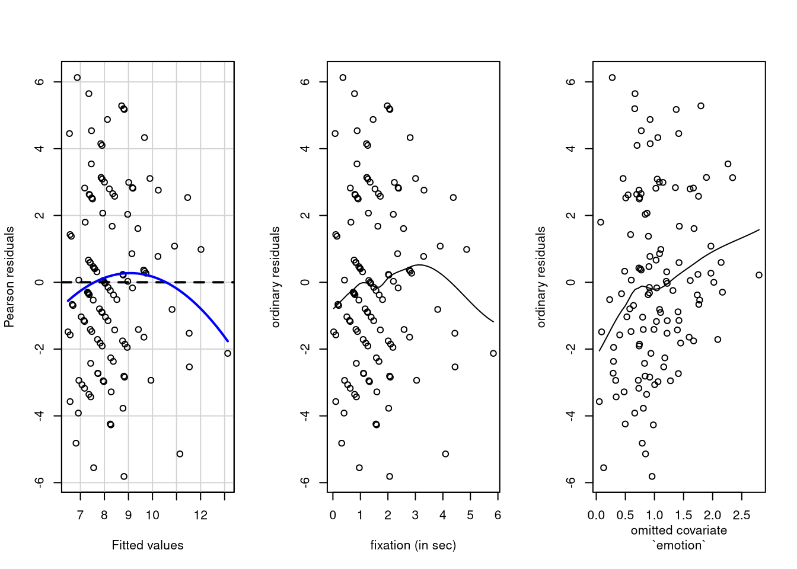
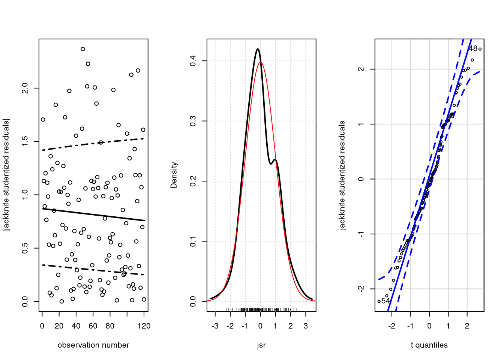

3.1 The lm function
The function lm is the workshorse for fitting linear models. It takes as input a formula: suppose you have a data frame containing columns x (a regressor) and y (the regressand); you can then call lm(y ~ x) to fit the linear model \(y = \beta_0 + \beta_1 x + \varepsilon\). The explanatory variable y is on the left hand side,
while the right hand side should contain the predictors, separated by a + sign if there are more than one.
If you provide the data frame name using data, then the shorthand y ~ . fits all the columns of the data frame (but y) as regressors.
To fit higher order polynomials or transformations, use the I function to tell R to interpret the input “as is”.
Thus, lm(y~x+I(x^2)), would fit a linear model with design matrix \((\boldsymbol{1}_n, \mathbf{x}^\top, \mathbf{x}^2)^\top\). A constant is automatically included in the regression, but can be removed by writing -1 or +0 on the right hand side of the formula.
The lm function output will display ordinary least squares estimates along with standard errors, \(t\) values for the Wald test of the hypothesis \(\mathrm{H}_0: \beta_i=0\) and the associated \(P\)-values. Other statistics and information about the sample size, the degrees of freedom, etc., are given at the bottom of the table.
Many methods allow you to extract specific objects. For example, the functions coef, resid, fitted, model.matrix will return \(\widehat{\boldsymbol{\beta}}\), \(\boldsymbol{e}\), \(\widehat{\boldsymbol{y}}\) and \(\mathbf{X}\), respectively.
##
## Call:
## lm(formula = intention ~ fixation, data = intention)
##
## Residuals:
## Min 1Q Median 3Q Max
## -5.813 -1.828 -0.207 2.176 6.130
##
## Coefficients:
## Estimate Std. Error t value Pr(>|t|)
## (Intercept) 6.453 0.428 15.06 < 2e-16 ***
## fixation 1.144 0.224 5.12 1.2e-06 ***
## ---
## Signif. codes: 0 '***' 0.001 '**' 0.01 '*' 0.05 '.' 0.1 ' ' 1
##
## Residual standard error: 2.7 on 118 degrees of freedom
## Multiple R-squared: 0.182, Adjusted R-squared: 0.175
## F-statistic: 26.2 on 1 and 118 DF, p-value: 1.21e-06## 2.5 % 97.5 %
## (Intercept) 5.6 7.3
## fixation 0.7 1.6yhat <- fitted(linmod) #fitted values yhat
e <- resid(linmod) #ordinary residuals
jsr <- rstudent(linmod) #jackknife studentized resid.The estimated intercept \(\widehat{\beta}_0\) is 6.92 and the estimated slope \(\widehat{\beta}_1\) is 1.29 The table gives the \(p\)-values for the null hypotheses \(\beta_0=0\) and \(\beta_1=0\), which are negligible. The estimated variance \(\widehat{\sigma}^2\), given by the Residual standard error is 2.86.
To obtain predicted values for combination of explanatories not present in the dataset, we need to first create a new data frame, with the same column names as those of the explanatory. In this case, the only \(\mathrm{X}\) variable is fixation. We can get confidence intervals for the mean value with interval = "conf" or prediction intervals for the new observations with interval = "pred".
newdata <- data.frame(fixation = seq(0, 6.5, length.out = 100L))
# Predictions with confidence interval for E(Y)
fitted_vals <- predict(object = linmod,
newdata = newdata,
interval = "conf")
#Same, but with prediction intervals for Y_new
predict_vals <- predict(object = linmod,
newdata = newdata,
interval = "pred")
plot(intention ~ fixation, data = intention)
matplot(x = newdata$fixation,
y = fitted_vals,
col = "blue",
add = TRUE,
type = "l")
matplot(x = newdata$fixation,
y = predict_vals,
lty = 2, #dashed lines,
col = "blue",
add = TRUE,
type = "l")
The confidence interval for the mean value \(\mathsf{E}({\widehat{Y}_i})\) is larger for values of \(\mathrm{X}\) that are far from \(\overline{\mathrm{X}}\); since there are less neighboring points, the model is extrapolating at this point and this translates in higher uncertainty, roughly speaking. The prediction intervals are much wider and account for the additional variability of \(\varepsilon_{\text{new}}\); the intervals are pointwise, so for any given \(\mathrm{X}\), we would assume that 95% of the intervals in repeated samples would capture \(Y_{\text{new}}\).
3.1.1 Graphical diagnostics and analysis of residuals
The hypothesis underlying the classical linear model are
- independence
- linearity (correct specification of the mean response)
- homoscedasticity
- normality
Underlying the linear model \[\begin{align*} Y_i = \beta_0 + \sum_{j=1}^p \mathrm{X}_{ij} + \varepsilon_i. \end{align*}\] is the hypothesis that the errors \(\{\varepsilon_i\}_{i=1}^n\) are independent and identically distributed \(\mathcal{N}(0, \sigma^2)\) variables. We get to observe \(y_i (i=1,\ldots,n)\), but \(\beta_0, \beta_1, \ldots \beta_p, \sigma^2, \varepsilon_i (i=1,\ldots,n)\) are all unknown. The best we can hope for is least square estimates for \(\beta\)’s, say \(\widehat{\beta}_0, \ldots, \widehat{\beta}_p\). The fitted values are \(\widehat{y}_i=\widehat{\beta}_0 + \sum_{j=1}^p \widehat{\beta}_j \mathrm{X}_{i,j}\) from which we will deduce the ordinary residuals \(e_i = Y_i - \widehat{Y}_i\).
Unfortunately, it turns out that \(e_i\)’s are not independent; worst, they each have a different variance. However, the ordinary residuals and the fitted values are orthogonal, i.e. their linear correlation is zero. This is also true of \(\mathbf{X}_j\) and \(\boldsymbol{e}\), and \(\overline{e} = 0\) by construction. Thus, if we fit a linear model with mean structure \(\mathsf{E}(e_i) = \beta_0 + \beta_1\mathrm{X}_{ij}\) or \(\mathsf{E}(e_i) = \beta_0 + \beta_1 \widehat{y}_i\), the estimates for \(\widehat{\beta}_0\) and \(\widehat{\beta}_1\) will be exactly zero in both cases. We can verify this numerically.
#check whether coefs are zero
isTRUE(all.equal(coef(lm(e ~ yhat)), rep(0, 2), check.attributes = FALSE))## [1] TRUE## (Intercept) fixation
## -6.3e-17 8.0e-18## [1] -4.4e-17If we plot \(e_i\) against \(\hat{y}_i\) or \(\mathrm{X}_i\), we would expect to see no pattern. If we omitted important explanatory models for \(Y\), these would not be accounted for in the mean model and their impact would be transferred to the residuals, which would be correlated with the omitted covariate. We can use local smoothing to check for residual nonlinear relationships or changepoints between \(e_i\) and \(\hat{y}_i\) or \(e_i\) and \(\mathrm{X}_{i}\) by using a local smoother (LOESS) that should capture these local effects, if present. Bear in mind that the model is not reliable.
par(mfrow = c(1, 3))
car::residualPlot(linmod)
scatter.smooth(e ~ intention$fixation,
xlab = "fixation (in sec)",
ylab = "ordinary residuals")
scatter.smooth(e ~ intention$emotion,
xlab = "omitted covariate\n`emotion`",
ylab = "ordinary residuals")
There is no graphical in our example that the relationship between fixation time and buying intention is nonlinear — the dip in fitted value and fixation is spurious and is due to the lack of long fixation time, which means the point has high leverage and pulls the smooth to itself.
If we plot the omitted covariate emotion, we see that the local trend is positive and possibly non-zero. This seems to imply that the effect of emotion has not been captured by the model, suggesting that our simple linear regression mean model is overly simple. The extension from simple to multiple linear regression models is straightforward and we can assess the significance of an added variable and test for their significance. In practice, we should use added-variable plots for new variables.
Contrast the lack of residual structure between intention and fixation with the relation between horsepower and fuel consumption in miles per gallon of the auto dataset: we can see a clear nonlinear (potentially quadratic) relationship between distance per gallon and fuel consumption.
url <- "https://lbelzile.bitbucket.io/MATH60619A/auto.csv"
auto <- read.csv(url, header = TRUE)
lmauto <- lm(mpg ~ horsepower, data = auto)
# residual plots (Pearson resid = ordinary resid)
car::residualPlots(lmauto, tests = FALSE)
While plot method for lm objects return plots, the functions in the library car give nicer and often clearer output.
For heteroscedasticity, we can use the absolute jackknife studentized residuals rather than the ordinary residuals: the rationale is that the latter have different variance \(\sigma^2(1-h_i)\), where \(h_i\) is a known constant that depends on \(\mathbf{X}\). The jackknife studentized residuals are thus standardized residuals, whereby each \(e_i\) is divided by an estimate of its standard deviation so that each has the same variance and we can make comparisons. The term jackknife comes from the estimation method. If the \(\varepsilon_i\) are truly normally distributed, then the jackknife studentized residuals should follow a Student with \(n-k-1\) degrees of freedom, where \(k\) is the number of \(\beta\) parameters estimated. If \(n-k\) is large, say larger than 25, we can use the normal distribution for comparison.
par(mfrow = c(1,3))
# check for heteroscedasticity with jsr
plot(1:length(jsr), abs(jsr),
xlab="observation number",
ylab="|jackknife studentized residuals|")
#a fancy smoother
car::gamLine(1:length(jsr), abs(jsr), spread = TRUE)
#density plot
car::densityPlot(jsr)
dfjsr <- linmod$df.residual - 1L
#superimpose density of student
curve(dt(x, df = dfjsr),
from = -5,
to = 5,
add = TRUE,
col = "red")
# student q-q plot of jackknife resid
car::qqPlot(jsr,
distribution = "t",
df = dfjsr,
ylab = "jackknife studentized residuals")
## [1] 48 54Here, we see no evidence of heteroscedasticity; the latter is more frequent in multiplicative models, when effects typically increase over time (like growth whose increase is, according to economic theory, exponential). The kernel density estimator (with rugs) and the quantile-quantile plots show that most points are in line with the postulated Student distribution, there is no outlier or extreme value and the residuals are symmetrically distributed around zero.
Interpretation of quantile-quantile plots requires experience; this post by Glen_b on StackOverflow nicely summarizes what can be detected (or not) from the Q-Q plot.
3.1.2 Binary explanatory variable
We have seen in class that the two-sample \(t\)-test is a special of linear regression and that we can use the same model. The default parametrization is the so-called contrasts, whereby the intercept \(\beta_0\) correspond to the mean of the baseline, i.e., reference group and \(\beta_1\) is the difference between the two groups. The summary table gives the \(t\)-test for the two-sided test \(\beta_1=0\) with the alternative \(\beta_1 \neq 0\).
For example, compare the output of the following two commands:
##
## Call:
## lm(formula = intention ~ sex, data = intention)
##
## Residuals:
## Min 1Q Median 3Q Max
## -5.919 -2.552 0.081 2.173 5.448
##
## Coefficients:
## Estimate Std. Error t value Pr(>|t|)
## (Intercept) 7.552 0.376 20.07 <2e-16 ***
## sexwoman 1.368 0.523 2.61 0.01 *
## ---
## Signif. codes: 0 '***' 0.001 '**' 0.01 '*' 0.05 '.' 0.1 ' ' 1
##
## Residual standard error: 2.9 on 118 degrees of freedom
## Multiple R-squared: 0.0547, Adjusted R-squared: 0.0467
## F-statistic: 6.83 on 1 and 118 DF, p-value: 0.0102##
## Two Sample t-test
##
## data: intention by sex
## t = -3, df = 118, p-value = 0.01
## alternative hypothesis: true difference in means is not equal to 0
## 95 percent confidence interval:
## -2.40 -0.33
## sample estimates:
## mean in group man mean in group woman
## 7.6 8.9It turns out that the value of the test statistic and the \(p\)-value for the two-sample \(t\)-test are the same as those of the linear regression for the coefficient \(\beta_1\) corresponding to women. In fact, many tests we cover can be cast as linear models. The intercept parameter \(\beta_0\) is the average of men, whereas \(\beta_0+\beta_1\) is the average of women. The advantage of doing a linear regression is that we can quantify the effect of sex while accounting for other potential explanatories.